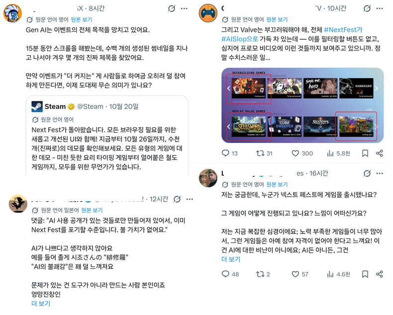
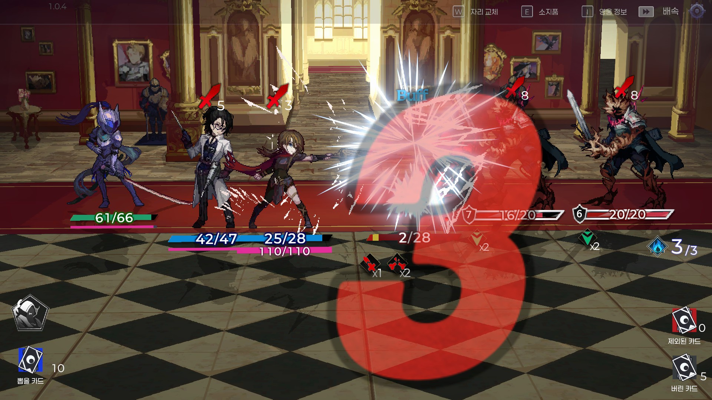
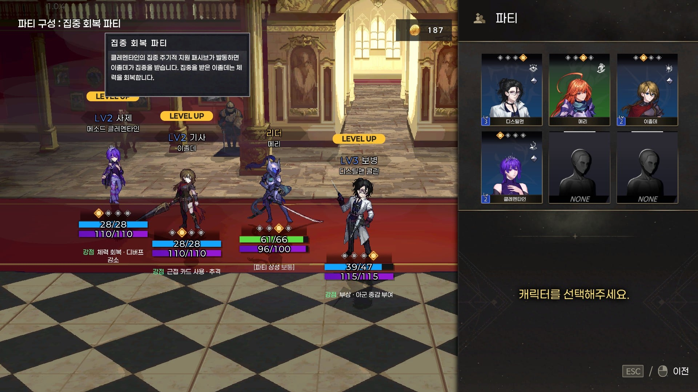
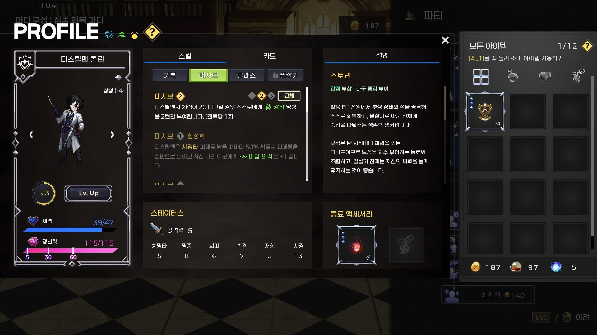
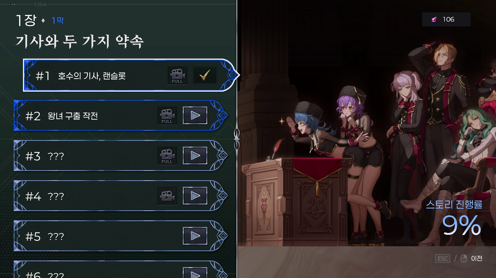
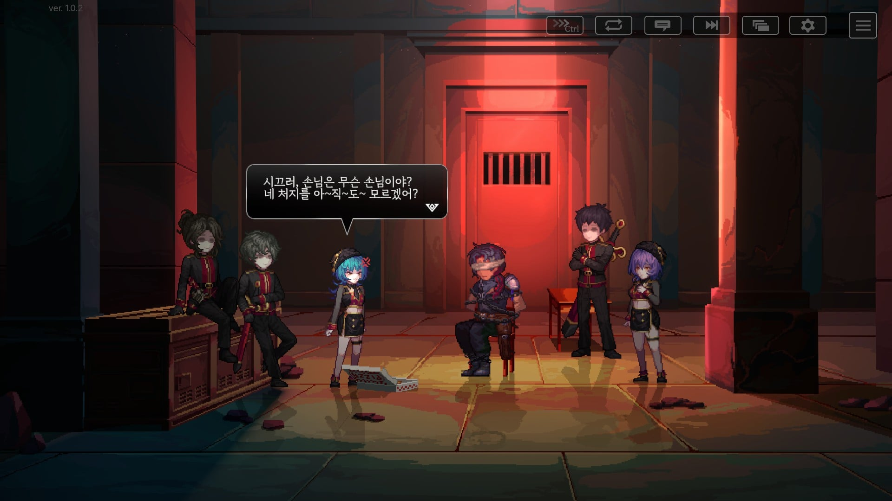

이번 스팀 넥페가 지난 번보다 2배 증가해서 8천개가 넘는다고 함
나도 이번에 참여했는데
이번에는 게임이 많아도 너무 많아서 일반인이 들어왔다가도 너무 심해서 뒤로가기 누르는 중이야

아무튼 그래서 다른 시즌보다 데모 플레이 유저 수 자체가 적은 상황임
내가 게임을 대충 만들었나 하면 그것도 아님
4년 동안 직접 도트도 찍고 일러도 그리고 음악도 연주해서 제작했고
시간 오래 걸려서 흥행이 보장되지 않는 게 인디게임이라지만
진심을 다해 만들었는데 한번만 봐줬으면 좋겠다

동료 세 명 넣고 리더 한 명 넣어서 플레이하는 파티기반 RPG임


버프 걸어줄 순서랑 효과 받을 딜러 뒤에 넣고 뚜까뚜까하면서 전진하는 게임인데
전투만이 아니라 시나리오도 준비했어

게임 이름은 아키타입 블루야
예전에 없던 다회차 플레이도 열어놨어

넥페 묻혀서 너무 속상한데 맛좀 봐주면 안될까?
제발 그냥 가지말고 한번만 부탁해
실력이 부족해서.. 여러번 고쳐봤는데 미감이 부족한 게 맞나봐요... 급한 것부터 마무리하고 점검해보겠습니다 말씀감사합니다